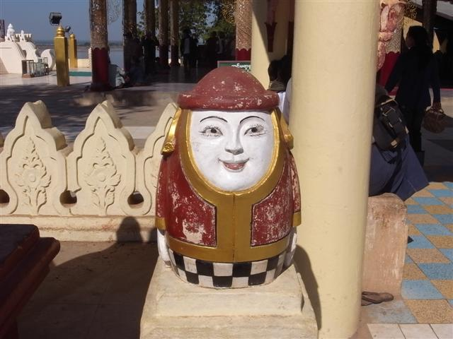
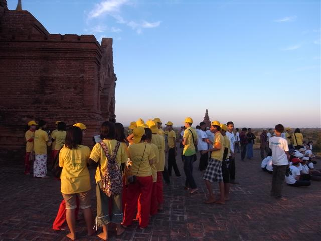

Inn Wa Guest House 位於 Nyaung U，距離新舊 Bagan 很遠不過是很多旅館和餐館的旺地。
早上在旅館天台吃早餐，遇見之前在 Mandalay 看 Moustache Brothers 坐我旁邊的韓國女子 Don，和她打招呼，她問我有否興趣一起坐馬車，馬車要 10000 Kyat 一天，我一心想騎單車拒絕了，不過我們相約晚上一起吃飯。
在旅館租了一輛單車，1500 Kyat，另外用 1000 Kyat 買了一張 Bagan 地圖。騎了不久才發覺這單車對我來說太高，而且煞車好像不太靈光......
來到 Shwezigon Paya 前面一個空地泊車，突然來了「四姐妹」，把蝴蝶扣針扣在我的衣上，說是禮物，叮囑我臨走時要光顧她們的攤檔。Shwezigon Paya 很多人，看不了多久就走人，反而在門前書檔看見些書，有 George Orwell 著作 Burmese Days 老翻書出售。
回去泊單車的地方，四位姐妹拉著我一定要我買東西，我只光顧了其中一檔，其餘三檔的不肯放過我，在這情況下我如何也沒有買東西的心情，其中兩位生氣地把我的兩隻蝴蝶拿走。
離開 Shwezigon Paya，往西面沿車路走，兩旁很容易有小路走到各古蹟。Bagan 的古蹟群中廟宇眾多，分散又廣，昨天在船上看見 Bagan 沿岸，已經能看見一些較巨大的。有些更大的古廟在離車路很遠的地方，若不是走馬看花，一至兩天是看不完的。
所以也只選擇一些有特色的來看。我駛過 New Bagan，New Bagan 由城牆圍著，裏面不大也不小，有間博物館但沒時間看。離開 New Bagan，經過 Myinkaba，不久後到達 Old Bagan，但 Old Bagan 沒有名顯分界，我不知道自己身在何處，不知不覺，南下了很遠很遠，路由平路變成越來越多高低起伏，踏得頗辛苦。
來到一處地方，看見一座很大很宏偉的東西，像一座大鐘，由舖好的車路，要經過一段沙路，單車在沙地上簡直是騎不動的，我推著它來到這寧靜的 Stupa 前，這裏沒有遊客，有一個老伯伯和一位小妹妹坐在門口旁邊。
我向他們說「Mingalaba」，這是你好的意思。老伯伯起身示意我跟他去，原來這大東西沒有入口，但在某一面牆有一個破洞，地上有一條木梯可供人攀上去，感覺像迷你版的胡夫金字塔入口（是誇張了點...）。但要由這細小洞口入去也很困難，不過，這些洞空氣都很差，又黑更其實沒東西看，老伯伯叫我進入通道中一個更細小的入口，裏面似乎有些東西，但是入口真的太細了，我是肯定要爬著「捐」過去的，實在不想這樣做所以離開了。從外面看其實也很美。
我拿出地圖問老伯伯這裏是什麼地方，原來我竟然越過了 Old Bagan，現在位置是在再南面的 Sittana Paya。但這裏沒有遊客，極寧靜，感覺和 Bagan 其他古蹟不同，反而留得久了。
不覺已四時，還有些出名的古蹟沒有去，連忙踏回去。
看日落的熱門地點 Shwesandaw Paya 和 Dhammayangyi Pahto 都是在那些沙地中間，雖然單車可以行大部分的路，但不時都會踏不動跌下來，感到很累很氣餒。來到 Shwesandaw Paya，匆匆走上頂處，早已超多人，而且這地方真的細小到不行，難以想像一會兒日落時會如何擠法。竟在這裏碰見渡邊君，他就在這裏看日落了，我還要趕往另外兩個地方，急急腳又走人。
經過 Dhammayangyi Pahto，是不許上去的，怎辦呢，決定去一個偏門一點但很遠的 Pyathada Paya。剛巧在場的一部車也打算去 Pyathada Paya，司機叫我跟他車尾。
這東尾可真不好跟，司機還打趣說「很遠的啊」，我覺得像在玩越野單車，但我這部卻是部高身的普通單車，多次看見車在轉了角不見了，然後又出現了，一面認著回程路，一面小心避開那些一踏便停的沙堆。中途司機還要行錯了路，經過另一個 Pagoda，再行了一會兒，終於看見遠方一個頗宏偉的古蹟，它就是 Pyathada Paya 了。
車不用等我繼續往前走，Pyathada Paya 前面的路差不多全是沙，我再無法騎單車過去，唯有下車推過去，跟著人群進入 Pyathada Paya，經過一條點了蠟燭的狹窄樓梯，上到去頂層，一個廣闊的平台，人雖然不少，但絕不擠迫。這裏比 Shwesandaw 好得多了。看見遠處的 Dhamayangyi 和 Shwesandaw，一些散佈樹林中的 Pogoda，也真的很美麗。
日落後，天空的紅色漸變，人們紛紛離去，我也趁著還有光踏單車回去，剛才也不太記得路如何行，只懂朝著一個方向不斷地踏，天黑得好快，路也不怎樣見得到，幸好有時有電單車從後方超越我，相信方向正確。
摸黑在樹林中騎單車都幾有趣，好不容易走出到車路，但又要再騎十數公里才能回去 Nyaung U，累到半死。回到 Inn Wa Guest House，把臉、頸和手上的 thanakha 洗去，和 Don 會合，去了一間有木偶戲看的餐廳，這餐廳的木偶戲竟然會玩噴火，這可在 Mandalay 的木偶戲沒見過。
餐廳位於一條十分多食店的街，這裏亦有一些旅行社，飯後我在一間安排了明天 Mount Popa 行山，價錢比 Inn Wa Guest House 便宜。
Shwezigon Paya
Kyanzittha Umin

Tharabar Gate
Ananda Pahto
Bupaya

Gawdawpalin Pahto
Sittana
Shwesandaw Paya
Sulamani
Dhammayangyi Pahto
Pyathada Paya
